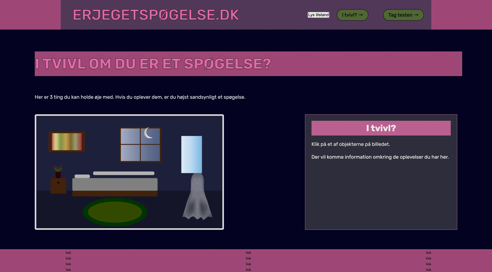

Grundlaeggende
brugergraenseflade
I tema 4 blev jeg introduceret til mere avancerede frontend-teknologier som JavaScript og CSS Custom Properties. Gennem temaets opgaver lærte jeg, hvordan JavaScript kan bruges til at skabe interaktive funktioner på en hjemmeside, og hvordan CSS Custom Properties kan gøre styling mere overskuelig og genanvendelig.
Derudover begyndte jeg at arbejde med GitHub branches, hvilket gav mig en bedre forståelse for organisering af kode. Jeg blev også introduceret til Adobe Illustrator og vektorgrafik.
Min løsning
Opgaven i dette tema gik ud på at videreudvikle et eksisterende Emergency Site, hvor vi selv skulle vælge en nødsituation og tilpasse design, indhold og funktionalitet til vores eget koncept. Jeg valgte emnet "Er jeg et spøgelse?", som fungerede som en humoristisk guide til at hjælpe brugeren med at finde ud af, om de var et spøgelse eller ej.
Først udviklede jeg en interaktiv infografik i Adobe Illustrator, som efterfølgende blev implementeret på sitet ved hjælp af JavaScript. Herefter kodede jeg en webformular, hvor brugeren kunne besvare forskellige spørgsmål og få svar relateret til sitets tema.
Som næste trin udviklede jeg forsiden, som skulle fungere som en breaking news-side. Til sidst implementerede jeg en dark mode-funktion.

Min læring
En af de vigtigste læringer fra tema 4 var betydningen af at arbejde struktureret gennem hele udviklingsprocessen. I tema 3 arbejdede jeg med research, prototyping og brugertests, hvilket gav mig en tydelig retning for projektet. I tema 4 oplevede jeg derimod, at jeg manglede noget af denne struktur, og derfor havde jeg sværere ved at omsætte mine idéer til en løsning, jeg var helt tilfreds med. Efterfølgende har jeg reflekteret over min arbejdsproces og indset, hvor stor betydning planlægning og struktur har for det endelige resultat. Selvom jeg ikke var fuldt tilfreds med løsningen, lærte jeg meget af oplevelsen, og den har gjort mig mere bevidst om, hvordan jeg arbejder bedst i fremtidige projekter.